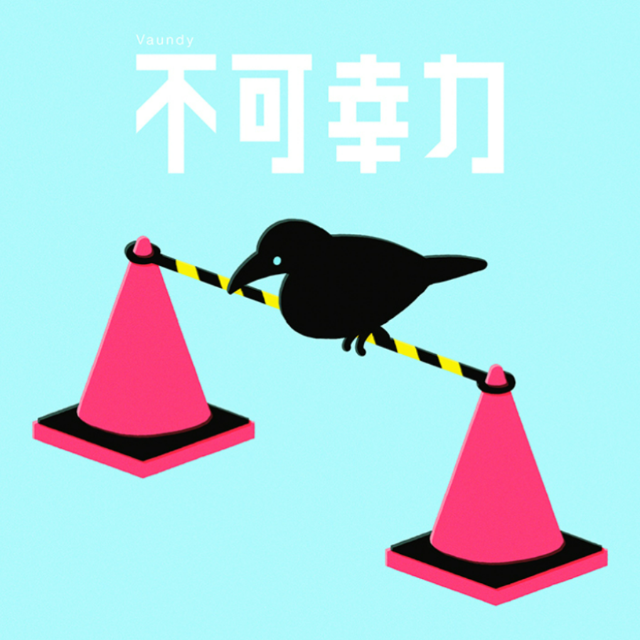

1st ALBUM LP
strobo+
[発売日] 2020/11/03
[収録曲]
A1. Audio 001
A2. 灯火
(FOD ドラマ
「東京ラブストーリー」主題歌)
A3. 東京フラッシュ
(ABEMA
「恋する週末ホームステイ」挿入歌)
A4. 怪獣の花唄
(マルハニチロ 冷凍食品
新中華街®シリーズ」TVCMソング)
A5. life hack
A6. 不可幸力
(Spotify Premium
全国地上波テレビCM
「Spotify Town」編
CMソング)
B1. soramimi
B2. Audio 002
B3. napori
(ブルボン アルフォート
「アルフォート、ある？」篇
CMソング)
B4. 僕は今日も
(マルハニチロ 冷凍食品
「WILDish」シリーズ
TVCMソング)
B5. Bye by me
(テレビ東京 ドラマ25
「捨ててよ、安達さん。」
オープニングテーマ)
B6. Tokyo Flash
- TEMPLIME Remix
Supported bt Spotify
1st ALBUM
[発売日] 2020/05/
[収録曲]
1. Audio 001
2. 灯火
(FOD ドラマ
「東京ラブストーリー」主題歌)
3. 東京フラッシュ
(ABEMA
「恋する週末ホームステイ」挿入歌)
4. 怪獣の花唄
(マルハニチロ 冷凍食品
「新中華街シリーズ」TVCMソング)
5. life hack
6. 不可幸力
(Spotify Premium
全国地上波テレビCM
「Spotify Town」編 CMソング)
7. soramimi
8. Auduo 002
9. napori
(ブルボン アルフォート
「アルフォート、ある？」篇
CMソング)
10. 僕は今日も
(マルハニチロ 冷凍食品
「WILDish」シリーズ
TVCMソング)
11. Bye by me
(テレビ東京 ドラマ25
「捨ててよ、安達さん。」
オープニングテーマ)

{kind=link}

[発売日] 2020/01/22
[収録曲]
1. 不可幸力
(Spotify Premium
全国地上波テレビCM
「Spotify Town」編 CMソング)
DISITAL SINGLE
不可幸力
[発売日] 2020/01/22
[収録曲]
1. 不可幸力
(Spotify Premium
全国地上波テレビCM
「Spotify Town」編 CMソング)